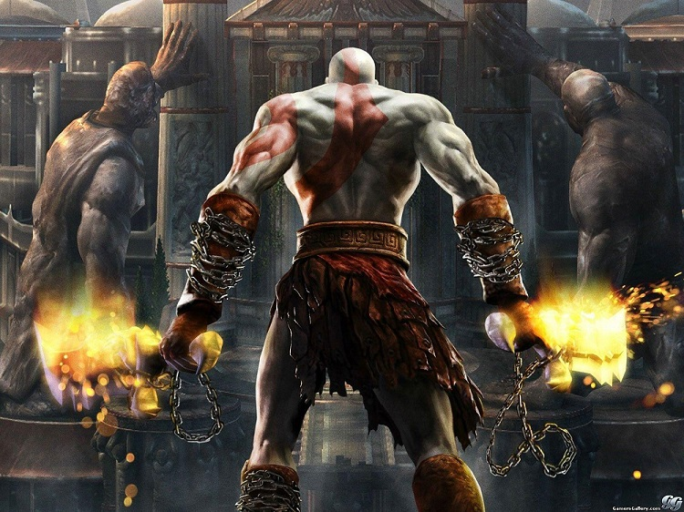
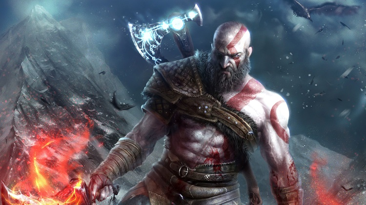

Посмотрим сможите ли вы угадать этого персонажа по затылку?
Кратос — протагонист серии игр God of War, разработанных американской компанией Santa Monica Studio. Кратос стал одним из самых узнаваемых персонажей видеоигр, в частности, на игровых приставках семейства PlayStation, где почти исключительно выходили игры серии.
Кратос — спартанский воин, полубог и сын Зевса, мстящий олимпийским богам за различные обиды, в том числе совершённое его же руками убийство собственной семьи; в этих играх он показан как жестокий, ни перед чем не останавливающийся антигерой. В первой игре серии он убивает Ареса, на правах победителя получив титул бога войны, и в хронологически последующих играх сражается с различными богами и мифическими чудовищами уже в этом качестве. В игре God of War 2018 года, основанной уже на скандинавской мифологии, Кратос показан постаревшим и уже не так легко поддающимся слепой ярости — он выступает как отец и наставник для своего нового сына Атрея.